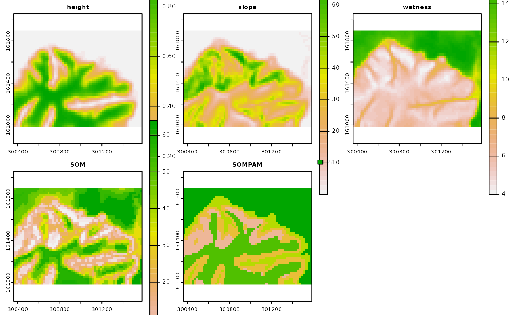

Creation of a rasterized representation of the outputs from the
self-organizing map (SOM) and partitioning around medoids (PAM). Given a
reference raster layer, each winning unit of the SOM and clustering value
from the PAM will be mapped on the corresponding cell in the reference layer
and across the geographic space supported by such layer. Note that this
function is a follow-up of the som_gap function.
Arguments
- ref.rast
SpatRaster, as in
rast. This raster layer will serve as a reference of the index of valid cells and the geographic support for the rasterized representation of SOM's winning units and PAM's clustering. See Details for some notes about efficiency.- kohsom
SOM Object of class kohonen, see
supersom. The following components must be present in the SOM object (1) unit.classif = winning units for all observations, and (2) codes = matrix of codebook vectors.- k
Integer (positive value). Number of clusters to form from the codebook vectors of the SOM, where k < SOM's codebook vectors.
- metric
Character. Distance function for PAM. Options are "euclidean", and "manhattan". Default: "manhattan"
- stand
Boolean. For the PAM function, do SOM's codebook vectors need to be standardized? Default: FALSE
- ...
Additional arguments as for
pam. See Details.
Value
sompam: Object of class pam. See ?pam.object for details.
sompam.rast: Multi-layer SpatRaster, as in
rast. The first raster layer corresponds to the SOM's
winning units. The second raster layer corresponds to the clustered SOM's
codebook vectors by PAM.
Details
As in som_gap, this function calls pam
to perform the clustering of SOM's codebook vectors. The SOM object must
belong to the class kohonen, as in supersom.
Note that in order for som_pam to perform efficiently, the
reference SpatRaster ref.rast must be a single-layer SpatRaster with
the same cell size, number of rows, number of columns, and index of valid
cells as those in the multi-layer SpatRaster object used in
som_gap. If a multi-layer SpatRaster (with each layer possibly
having a different index of valid cells) is used as the ref.rast, the
efficiency of som_pam (i.e., running time and/or memory
allocation) may be degraded when handling large SpatRaster objects.
For this function to work as intended, the additional argument
cluster.only in pam must remain as FALSE, which
is the default.
Examples
require(terra)
# Multi-layer SpatRaster with topographic variables
p <- system.file("exdat", package = "rassta")
ft <- list.files(path = p, pattern = "^height|^slope|^wetness",
full.names = TRUE
)
t <- rast(ft)
# Scale topographic variables (mean = 0, StDev = 1)
ts <- scale(t)
# Self-organizing map and gap statistic for optimum k
set.seed(963)
tsom <- som_gap(var.rast = ts, xdim = 8, ydim = 8, rlen = 150,
mode = "online", K.max = 6, B = 300, spaceH0 = "original",
method = "globalSEmax"
)
#> Clustering k = 1,2,..., K.max (= 6): .. done
#> Bootstrapping, b = 1,2,..., B (= 300) [one "." per sample]:
#> .................................................. 50
#> .................................................. 100
#> .................................................. 150
#> .................................................. 200
#> .................................................. 250
#> .................................................. 300
# Optimum k
tsom$Kopt
#> [1] 5
# PAM clustering of topographic SOM's codebook vectors
tpam <- som_pam(ref.rast = t[[1]], kohsom = tsom$SOM, k = tsom$Kopt)
# Plot topographic variables, SOM grid and PAM clustering
if(interactive()){plot(c(t, tpam$sompam.rast))}
